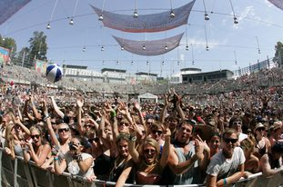

Big Day Out @ Homebush, Sydney (26/01/2011)


Waking up late in the morning on Australia Day to simmering heat outside, I realised I still hadn’t slept off my hangover from the previous weekend. How the hell was I gonna drag myself through the typically grueling experience that was the Big Day Out?
It’s definitely a breed apart from the green grass, blue skies and oversized sunnies of your average dance festival. The searing heat seems to peak every year just in time, and with crowds of around 70,000 or so in Sydney, there are massive distances to traverse and some absolutely whopping huge arenas. However, something special has kept me going every year since I saw Soundgarden, Fear Factory and The Prodigy as a teenager back in 1997. It’s worth attending even when the lineup is occasionally lackluster, but with the amount of ‘BIG’ acts featuring in 2011, not even stonking tropical humidity was going to keep me away.
Arriving just after 2pm, it was time to head to the main arena to grab a drink and take stock of things. Bogan hard rockers Airborne are throwing themselves into things with appropriate gusto, and their hard rockin’ Aussie attitude is a fitting way to start the day. In a way, they’re a good reflection of the tens of thousands of rough-and-tumble punters from all over NSW who descend on Homebush for the day, but to pin this as representative of a typical BDO crowd doesn’t really do it justice, as it truly does host a more diverse bunch of people than you’ll see at any other festival. That’s the beauty of it, and looking out over the main arena, the epic vibe for the day is already locked in place.
It’s also utterly exhausting from the very beginning. Chicago hip hop star and BDO regular Lupe Fiasco hits the mainstage next, an upgrade from 2009’s Boiler Room performance, and he’s backed up his usual massive entourage of live performers. How quickly he’s embraced by the crowd is a testament to just how diverse the music programming is at the BDO – it’s about as eclectic as the punters gathered to watch them perform.
We’re given another slice of mainstage hip hop later in the day, this time on a local tip from Bliss N Eso. There’s a lot less bravado in their set-up, but just as much power in their tunes, and they work fabulously in such a large setting. On both occasions though, we’re given a rude shock when we attempt to leave the grandstands and venture towards the D-barrier. The sun is absolutely beating down and temperature soars 20 degrees when you leave the shadows. Once again, BDO is a test of your endurance and survival – but again, that’s just part of the experience.
Just as important for BDO is the dance and electronic element – largely represented by the stupendously big Boiler Room, which has grown in Sydney gradually over the years to become probably one of the largest indoor venues in the world, capable of hosting up to 30,000 people. Walking in at the back, you get the impression of several airplane hangars slapped down alongside each other, with a Ferris Wheel unassumingly placed right at the back, which looks great but doesn’t exactly dominate the room. Narrowly missing CSS (‘tis often the case with the Big Day Out, as I realised later in the day I’d also innocently missed both Booka Shade and Primal Scream ), we arrive to the chopped-up sounds of Sampology, who’s ripping through all kinds of dubstep, hip hop and broken beats in a set that’s well suitable for the Boiler Room.
Next up is the South African freakshow that is Die Antwoord – the lights dim, and the seething sounds of a bass-heavy growl builds over the speakers, and the face of that creepy deformed dwarf who stars in their videos takes over the massive screens at the front. MC Ninja stuts onto the stage with the declaration, “When I was a boy, I wanted to be a ninja”… and then he’s joined on stage by his bleached blonde sidekick Yo-Landi, and they launch into their white trash Cape Town anthem Enter The Ninja. It’s extremely high on entertainment value, but two songs is more than enough for me.
Big Day Out 2011
January 26th, 2011
Sydney Showground, Sydney
Heading over to the Green and Converse stages on the grass, it’s a much more intimate area that’s still packed with people for most of the day, and it’s here you feel a lot more camaraderie with the crowd. For the most part here there’s nowhere you can escape the beating sun, and it’s often here that you suffer the harsh intensity of the day the most, or otherwise, jack right into the communal bliss as a cool breeze blows through and the sun begins to set.
Plan B is bouncing around the stage with his UK hip-hop-and-soul fusion, blasting energetically through his own anthems like Stay Too Long, but also ripping into some inspired takes on soul classics – littered with the occasional wobbly dubstep breakdown. It’s an inspiring blend of old and new. Next up are triple j Hottest 100 winners Angus & Julia Stone, who’re entrancing enough to win over the punters with a far more mellow acoustic set.
Next up it’s back to the quickly-filling Boiler Room for the Bloody Beetroots in full Death Crew 77 band mode. They’re scorned by a lot of dance enthusiasts these days, which probably has a lot to do with the fact that they’re so relentlessly popular with “the kids”, but their mix of old-school hardcore grind and acid-soaked electro noise makes them perfect fodder for the Boiler Room as far as I’m concerned.
The crowd hysteria that we saw on their Stereosonic 2009 tour has for the most part died down, but they bring an extravagant stage presence that matches their aggressive posturing (donned in Spiderman masks as always), as well as the huge logo adorning the stage and the stark, flashing visuals on the screens. Probably the best act I see in the Boiler Room all day.
Meanwhile, the tension is building over at the mainstage for the heavily entrance of German hard rockers Rammstein. Musically, they came at the tail end of the industrial-metal movement that produced far better acts like former BDO players Ministry and Nine Inch Nails, but most of the love is for the dramatic bravado of their spectacular stage show – flame throwers, towering epilepsy-inducing flashing light installations, plenty of bombast and silly theatrics.
They’re talked about by many as the act that defined this year’s festival, but I’m drawn halfway through the set over to check out LCD Soundsystem. Frontman James Murphy is as affable as ever, giving lots of love to the crowd and it’s exciting to see all of DFA’s usual suspects gathered as a huge posse on stage. Musically though, they’re disappointingly sloppy with the arrangements all over the place, and it’s a huge contrast to the emotional delivery we got a few years ago at much the same time of day in the Boiler Room.
Finally over at the mainstage, headliners Tool front up for a menacing set of murky heavy metal grind that starts deep and builds with plenty of restraint. This ain’t no set of anthemic big tunes (as they’re mostly absent from Tool’s back catalogue anyway), but it’s a reflection of their absolute musical mastery that the packed stadium remains gripped the whole time.
And those visuals – swirling arrays of psychedelic colour on screens that that pretty much dominate the entire stage. With every subtle build, movement or change in direction of the music, the visuals change along with it; to call the show “dazzling” is to play down its impact. It’s nothing on the life-changing ferocity that Rage Against The Machine brought a few years ago, but Maynard and his crew bring a lot more subtlety and careful pacing to the table – there’s a reason they were on the ‘must-see’ list for many ITMers, in spite of their hard rock status.
A quick dash over to the side stages sees Pnau absolutely killing it with a selection of spectacular-sounding new material, as well as a devastating rendition of No More Violence – I’m shocked at how much stage presence they have, at the tightness of their live/electronic performance, as well as the effectiveness of Nick Littlemore’s shirts-off posturing and Jesus poses. Anyone who’s written off Pnau as creatively spent, think again, as this was the big surprise of the day for me.
Back over for one more jaunt in the Boiler Room, and it’s only half full – no problem at all if you head down the front, but it’s clear that M.I.A doesn’t possess even nearly the stage presence to fill such a space for the closing spot. She warbles through her songs with a delivery that’s often embarrassing, and the harsh industrial backing sounds and stunning visuals can’t save her.
There’s been a few programming stumbles in the Boiler Room over the past years; it’s pretty hard to find an act like The Prodigy who can dominate that huge space so easily, but if they’re lacking, why not employ the services of a big-hitter DJ to do the job instead? Carl Cox and 2manyDJs have done absolutely sterling jobs of stepping up to rock 30,000 strong crowds in the past few years, and there’s a pretty large pool of DJ talent to choose from if the organisers start looking outside the box a little. Nonetheless, the lighting, visuals, sound, set-up and scale of the room is still jaw-dropping.
This year’s Big Day Out was as gruelling and exhausting as any I’ve been to, but while many of our other major festivals leave a bad taste in our mouth because of how much hard work they subject us to, the challenge here is more the heat and the sheer scale of things.
There’s just so much excellent music to catch all day from one end of Homebush to the other, but whether you love or you’re indifferent to the music you’re hearing, it’s only one piece of the puzzle. It’s just always an exhilarating thing to feel the collective energy of the tens of thousands of people gathered to party hard on Australia Day, and the extreme heat only adds to this – it brings everyone down to a common level, throws any pretensions out the window and ultimately defines what is the King of Australian festivals. Worth every ounce of pain you feel when returning to work the next day.